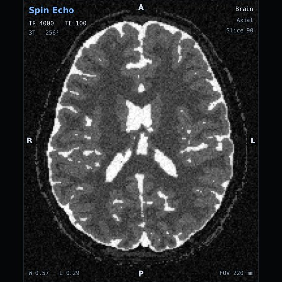
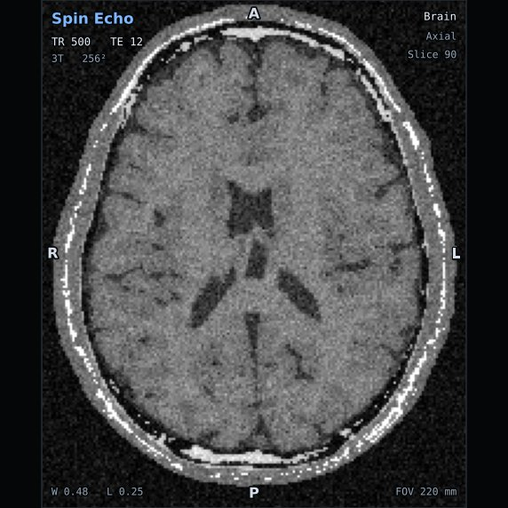
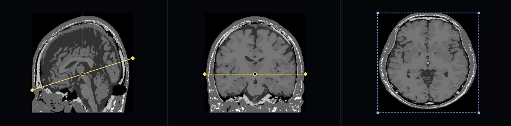
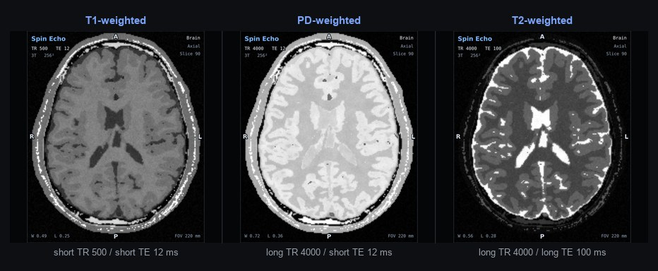
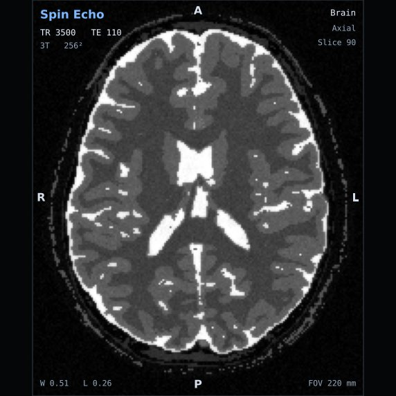
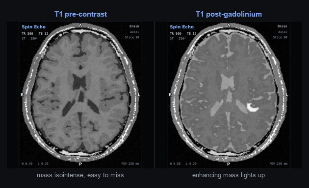
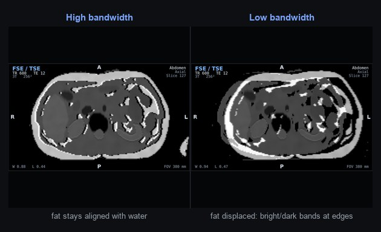

A structured path from fundamental nuclear spin physics to clinical scanning. Designed for students, radiography technicians, and imaging professionals.
Follow these 4 self-paced modules to master pulse sequences, k-space filling, image contrast weighting, and scanner safety standards.
The fundamental visual rule that allows you to instantly differentiate T1 from T2-weighted scans in clinical practice:

Ventricles (CSF Fluid): DARK
Fat / White Matter: BRIGHT
Short TR (< 600ms) • Short TE (< 20ms)

Ventricles (CSF Fluid): BRIGHT
Fat / White Matter: DARK / INTERMEDIATE
Long TR (> 2000ms) • Long TE (> 80ms)

Pixels, signal brightness, and how tissue water protons respond to static magnetic fields.
The golden rule for differentiating T1, T2, and Proton Density weighting.

Precession, gyromagnetic ratio, and resonance at 1.5 Tesla vs 3.0 Tesla.

The classic 90° excitation followed by a 180° refocusing pulse to eliminate dephasing.

Low flip angles, gradient reversal refocusing, and fast scanning mechanisms.

Using 180° preparatory pulses and Inversion Time (TI) to suppress fluid or fat.

How paramagnetic contrast agents enhance vascular structures and breakdown of the blood-brain barrier.

Spatial frequency raw data: center represents contrast, periphery represents edge detail.

Recognizing motion artifacts and using BLADE/PROPELLER or gating to fix them.

Fat-water boundary phase differences, frequency displacement, and bandwidth compensation.